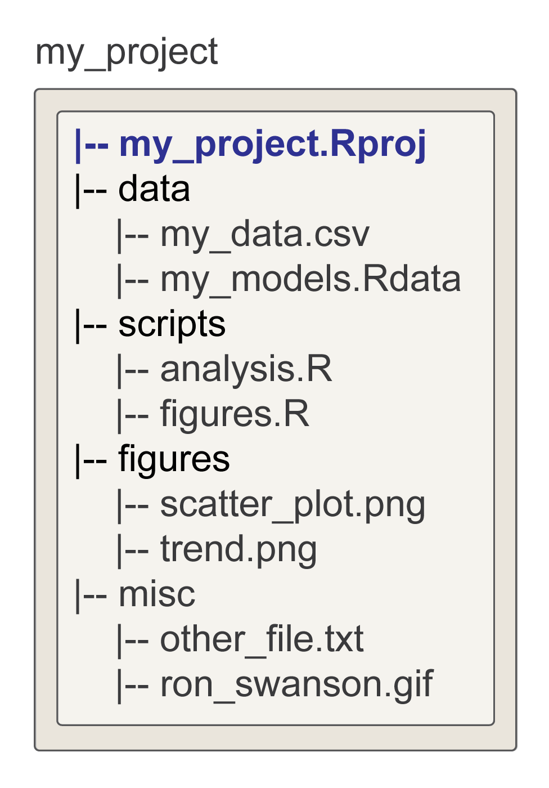

Chapter 9 Workspace Management
Figure 9.1: The R Environment
9.1 Overview
| Goal | To introduce students to the idea of a computing workspace. |
| tl;dr | It’s just like your kitchen! Keeping it clean won’t necessarily make you a great cook, but it will make you a better one. |
| Outcomes |
Here, you will learn about
|
| Datasets | Palmer Penguins (Horst, Hill, and Gorman 2020) |
| Requirements |
Chapter 6: R Basics Chapter 8: Vector Types |
| Further Reading | NONE |
9.2 The Workspace
When you first start working with R, you might find yourself on occasion asking a rather innocuous question: Where do the objects we create actually go? The technical answer is your computer’s memory, with an anchor (related to the object’s name) that allows you to retrieve them. The simpler and more intuitive answer is that they end up in one of your R environments, in particular, your workspace. You can think of an environment like the workspace as a special sort of named list.
bob <- list(a = 1:5,
add_one = function(x){ x + 1 },
b = LETTERS[1:10],
c = "quotidian",
d = TRUE)
# coerce list to environment object
workspace <- as.environment(bob)When you create an object, you do not have to explicitly add it to an environment, for R adds your defined objects to your workspace by default. The key here is just to recognize that when you use <-, you are really just adding an element to a list, the environment-list.
If you want to know what objects currently reside in your workspace, you can use ls(), which works like names() does for lists, printing the names of its denizens.
Note that because ls() assumes you are interested in the workspace, you do not have to specify the environment explicitly. You can just do ls() instead of ls(workspace). In the example above, we chose the more verbose alternative just to emphasize the environment-as-list analogy.
One other function you might find useful is ls.str(). This is a combination of ls() and str(), which you were introduced to in the previous chapter. This function lists all the elements in the workspace and provides information about their structure.
ls.str(workspace)
## a : int [1:5] 1 2 3 4 5
## add_one : function (x)
## b : chr [1:10] "A" "B" "C" "D" "E" "F" "G" "H" "I" "J"
## c : chr "quotidian"
## d : logi TRUEls() and ls.str() is more or less what you will find in RStudio’s Environment pane, by default the pane in the upper right corner of the RStudio window. That means you do not normally need to use either function. RStudio does it for you.
9.2.1 Workspace Management
As a general rule, you should keep your workspace clean and orderly when conducting any analysis, just as you should keep your kitchen clean and orderly when cooking. There are two big reasons for this. First, it will help prevent careless mistakes (like running operations on the wrong objects or adding a cup of salt when the recipe calls for sugar). Second, it will make it easier to manage your workflow, to make it more efficient and intelligible. Right now, I have this horrifying image of that college roommate, you know, the one that never does the dishes, leaves food stains on the counter, lets food rot in the fridge, and for some reason you can’t quite fathom, spends several weeks conducting an experiment involving molds growing beneath the sink. And now that person is somehow, by some miracle, in charge of - I don’t know - Katz’s Deli in New York! One shudders at the thought! I mean, talk about a kitchen nightmare. By all that is good, you ought to avoid this. You want to avoid workspace nightmares.
One way to do that is to regularly remove objects that you will not re-use - meaning, you should banish them from your workspace. This is achieved with the rm() or remove function.
rm(a, envir = workspace) # read this as: remove object a from the workspace
ls(workspace)
## [1] "add_one" "b" "c" "d"Just as we noted with ls(), when you’re removing objects from your workspace (and not the toy environment that I just created as an example), it is sufficient to type rm(<object>) without specifying the environment, since it defaults to the workspace anyway.
9.3 The working directory
Now that we have some sense of the workspace in R, we need some way to associate it with a particular location on your computer. Why? For the familiar reasons: (i) to make your workflow more efficient (mostly by saving you from the tedium of excessive typing!) and (ii) to make your workflow more reproducible! And, actually, we can add one other very big one with very immediate, practical consequences, namely, (iii) to make collaboration easier! To make these big claims more digestible, let’s talk about file paths, and in particular the distinction between relative and absolute file paths.
9.3.1 File paths
A file path, maybe you know, is just a way of specifying the location of a file in a hierarchical directory. If you think of that hierarchical directory as having a tree-like structure, you can represent it as we do in Fig. 9.2.
Figure 9.2: Tree-like structure of a hierarchical computer directory. The orange line represents the absolute file path to data.csv.
A complete file path for data.csv here might look like this:
ROOT/Users/Leslie/NPS_project_folder/data.csv
with the backslash / providing a folder or directory separator, signifying that the bit on the right-hand side is contained within the bit on the left-hand side (sometimes called the “parent” directory). Assuming that ROOT is the first or top-most directory in this system (meaning it’s not a sub-folder of some other folder or directory), that file path is also absolute. No matter where you are on your computer, using that file path will also pick out that specific data.csv file.
A relative file path, on the other hand, is one that depends on your current location on your computer. It is relative to that location. For instance, the relative file path
NPS_project_folder/data.csv
will find data.csv only if your current location on your computer is
ROOT/Users/Leslie
As you can see, if we take care to make our location known, relative file paths can save us a lot of typing. They also contribute to reproducibility, but let’s build up to that idea.
9.3.2 Setting the working directory
First, let’s consider what happens if you try to use relative file paths in R without specifying what directory you are currently working in. So, let’s look more carefully at the folders in Leslie’s user directory.
Figure 9.3: Leslie has two folders in her directory on the computer: (i) scrap_book_folder and (ii) NPS_project_folder. She wants to read the file data.csv into R, but something has gone wrong…
From the diagram, you can see that her scrap_book_folder contains, among other things, some image and audio files. Similarly, NPS_project_folder includes some text and data files, as well as an R script! Now, suppose Leslie wants to open the file NPS_project_folder/data.csv in R and assign it to a name using this line of code:
What happens? It throws an error! R says it cannot open a connection because the file or directory does not exist. Why is this? The simple answer is that data.csv is a relative path, but R is currently pointing to the scrap_book_folder, so it’s looking in there for that file. Assuming we want to avoid absolute file paths - hint: we do! - we need some way to point R to NPS_project_folder, so we can use the relative path data.csv.
To help with this, base R provides two functions: getwd() and setwd(). As you might have guessed, the first identifies or gets the current working directory, the second changes or sets it. If Leslie were to use these commands while working with R on her own computer, she could type this:
getwd()
## [1] "ROOT/Users/Leslie/scrap_book_folder"
setwd("ROOT/Users/Leslie/NPS_project_folder")
getwd()
## [1] "ROOT/Users/Leslie/NPS_project_folder"Having set the working directory to NPS_project_folder, she could now go on to using the relative path data.csv to import that data into R.
9.3.3 Reproducible projects
What makes code reproducible? While we can’t give a complete answer to that now, we can offer at least one necessary condition:
R code is reproducible only if it is self-contained.
What does it mean for R code to be self-contained? Putting it simply, you should be able to save your R script (or the folder containing it, along with any data it requires) onto an external thumb drive, load it onto another computer (even one with a different operating system), run all the code, and get the exact (or very nearly the same) results WITHOUT CHANGING ANYTHING in the script.
This definition of containment should give you some sense of the problem setwd() poses. While it does allow you to use relative file paths in whatever comes after it, it itself requires an absolute file path! Meaning, each time you load the script onto a different computer, to run the code, you have to update setwd() with a new absolute path to the working directory. Thus, it bakes in an inherently unreproducible element of code.
What is the solution to this? In a word, Projects, specifically RStudio projects.
setwd(), see Jenny Bryan’s somewhat infamous blog post, Project-oriented workflow.
What is a project? It’s two things, really: a folder and a file. When you create a project in RStudio, you first give it a name. This name is then assigned to the project folder, which holds a project file that also has that name. You can identify the project file because it has a .Rproj extension. Whenever you open the project in RStudio, RStudio finds the absolute file path to the folder containing the .Rproj file and sets it as the working directory.
I won’t go into detail about how to make one. The basic steps are to open RStudio, then click File > New Project and make suitable choices based on the prompts. You’ll almost certainly want to choose an Empty Project to begin with. And make sure to save it in a directory you will remember with a name that that clearly expresses the purpose of the project.
9.3.4 Directory management
Every research project is different, but some common elements to tend to holdover. For instance, you will typically have some empirical inputs (meaning, your data), outputs (like figures), and because you are working with R, you will also have R scripts (and probably even Rmarkdown documents, though we are not discussing those here). These common elements should suggest a useful structure (shown in Fig. ??) that you will want to return to again and again for your project directory. Namely, it should have a data folder (where you include your hard won empirical observations), a figures folder (any that you might want to share with collaborators, include in publications, or use as a tool for communicating with the public), and a scripts or R folder (where you will include all the scripts that you write for your analysis).

Naming Conventions
Here are a few - somewhat opinionated - rules of thumb for naming files and folders:
- Make the name super descriptive. For example, if you have an R script that you write to process spatial data before conducting some analysis, call it
process_spatial_data.R.
- Do not use empty spaces! This is a big one. In several contexts, like URL file paths, spaces will break paths. For instance, if you go to download “bob.com/my resume.pdf”, you’ll end up with a file called “my.” To avoid these sorts of issues, you should use underscores
_and dashes-in place of spaces.
- Above all else, though, BE CONSISTENT with your naming conventions. Believe me when I say this, it will save you a lot of heartache in the long run.
9.4 Data Import and Export
Consider this scenario: you’ve gone out to the field, perhaps working with Dr. Kristen Gorman at Palmer Station in Antarctica. While there, you collect a heroic number of observations on the native penguin species, which you document meticulously (probably writing it down on paper, though that’s starting to change). Now, back home, you find yourself sitting at your computer, wanting to model your precious in R. Obviously, it will not do to prostrate yourself before your computer, holding up your field notes in pious supplication. Your computer - at least as of the writing of this sentence - won’t even acknowledge your presence. So, you’ll have to do it yourself. To that end, you’ll first want to digitize your data, probably using a spreadsheet application like Excel. And, because you have foresight, you’ll decide to save your data to a comma-separated values (or .csv) file. At this point, perhaps fortunately, you’ve now completed the lion’s share of your research project (I’d put it around 70-75%), but you’re still not done! To make that beautiful model in R, you’ll need to get your data into R first.
OK, so what do we do here?
9.4.1 Read and write tables
Notice, to begin with, that we are talking about tabular or rectangular data, likely consisting of varying data types. This should clue you into the vector type that you will be creating in R. Hint: it rhymes with data.frame. Notice, too, that we are talking about a comma-separated values file. What does that mean, exactly? Basically, it refers to a plain text file format in which columns of data are separated by commas. Consider, for example, your penguins data, which you’ve saved to a file called penguins.csv. Here is how the first six lines should look when opened with your operating system’s text editor:
"species","island","bill_length_mm","flipper_length_mm","body_mass_g","sex","year"
"Adelie","Torgersen",39.1,181,3750,"male",2007
"Adelie","Torgersen",39.5,186,3800,"female",2007
"Adelie","Torgersen",40.3,195,3250,"female",2007
"Adelie","Torgersen",NA,NA,NA,NA,2007
"Adelie","Torgersen",36.7,193,3450,"female",2007As you can see, the first line of text, known as the header, specifies the column names, and the following lines indicate the actual rows of data, which are separated into columns with commas. Some other column separators you might encounter from time to time include semi-colon (;, which is more common in countries that use the comma as decimal place, though it also uses the .csv file extension) and tabs (or a specific number of blank spaces, with file extension .tsv).
To import these delimited text files of tabular data, R provides the function read.table(). To work with this function, you need to familiarize yourself with three key parameters: file, sep, and header.
* The value you supply to file is the path to the data file, which you rightly stored in the data folder of your RStudio project directory, so that the path is relative. You’ll want to provide this as a character string, meaning you need to enclose it in quotation marks: file = "data/penguins.csv".
* The sep parameter wants to know what separator is being used to signal columns. In this case, it’s a comma, which you’ll also want to supply as a character string: sep = ",".
* Finally, you’ll want to specify whether the first line of text is a header or not (sometimes they are not included). This you will give a logical value (TRUE if the header exists, FALSE otherwise): header = TRUE.
All together then, you will want to write this:
making sure to assign the imported data to a name so that it sticks around.
What about exporting data out of R? For that, you’ll use write.table(). This function more or less mirrors read.table(), but requires that you also specify what data.frame you are wanting to save to file. So, supposing you’ve done some processing of your penguins data, added columns perhaps or filtered rows, and assigned the new data.frame to penguins_new, you’ll do something like this:
Just ignore row.names in this function call. It’s an odd design choice on the part of the authors of R that you don’t need to understand, though do remember to ALWAYS set it to FALSE.
read.csv() and write.csv(), which are wrappers around read.table() and write.table() that set sep = "," and header = TRUE by default.
9.4.2 Read and save objects
The authors of R have defined a few R-specific file types, but let’s just focus on one, .Rds. This format allows you to save a single R object to file. The functions for reading and writing these file types are saveRDS() and readRDS(). You use these basically the same way you use read.table() and write.table().
There are few occasions when you will use these, but when you do, they will typically be to save or restore non-rectangular or non-tabular data objects like lists and models.
load() and save(), which allow you to save multiple R objects at once, and load.image() and save.image(), which allow you to save and restore all the R objects in your current working environment. However, you should not rely on these. In fact, don’t use them. Why? Because this will force you to write R scripts that are reproducible!
References
Horst, Allison Marie, Alison Presmanes Hill, and Kristen B Gorman. 2020. Palmerpenguins: Palmer Archipelago (Antarctica) Penguin Data. https://allisonhorst.github.io/palmerpenguins/.